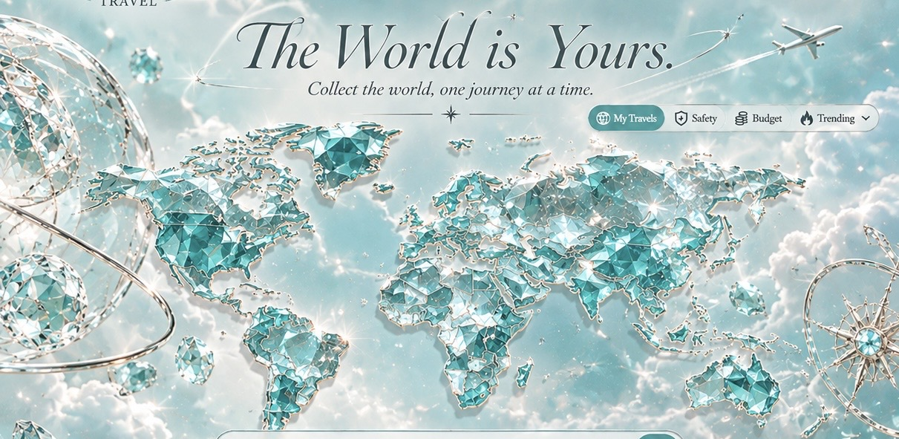

DISCOVER · DREAM · EXPLORE
TRAVEL



The World is Yours.
Collect the world, one journey at a time.
✧ 地図の国を選んで、旅のカードへ33ヶ国の旅の記録 ↗
Destinations
写真と気分から探す
Travel Gacha
偶然の旅先に出会う
Real Rankings
本音のおすすめを知る
FOLLOW YOUR FEELING
今の気分は、どんな旅？
POSTCARDS FROM TORAMI
旅の記憶を、ひとつずつ。
THE PERSONAL ALBUM
Some places stay with you.
旅先で撮った写真と、そのときの気持ちを。
トラみちゃんのアルバムを、これからここに。